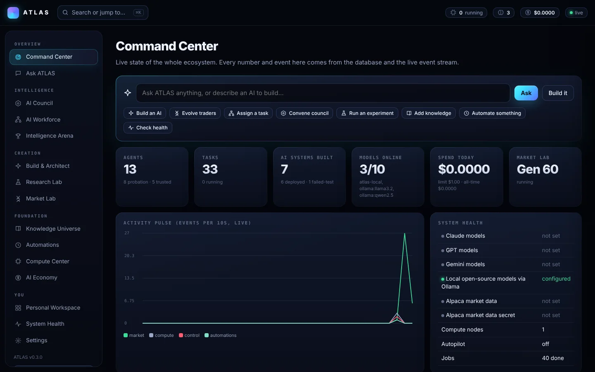
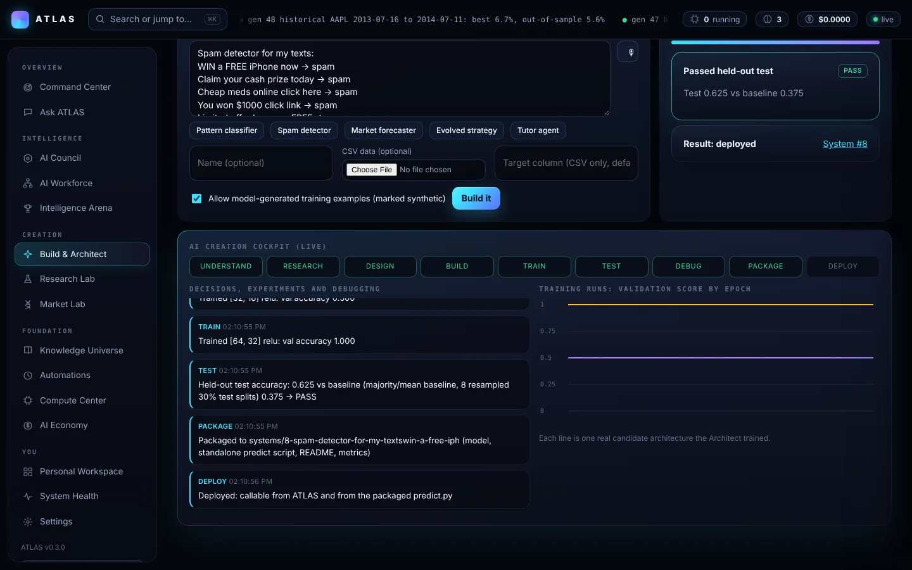

Build working AIs from one sentence. Evolve 500 trading bots on real market data. Run a team of AI agents that delegate, check each other's work and get cheaper over time. All on your own computer.

Every animation in ATLAS is driven by real activity. When an agent delegates, a model trains or a bot evolves, you watch it happen.
It researches, designs, trains several real networks, tests them on data they never saw and only ships if they beat a baseline.
Strategies evolve on real price history with trading costs. The weak die, the strong breed. Click any creature to see its DNA and family tree.
Virtual money only. Out-of-sample results are always shown.
Votes are weighted by each model's measured accuracy.
Leads create specialist agents on probation. They earn trust by passing tests.
Runs free models on your computer. Paid APIs are optional and hard-capped.
Chat grounded in your own notes and live web pages, with numbered sources.
Build neural networks layer by layer, watch their decision boundaries form, and run controlled experiments that tell you whether a result is real or noise.
One file for Mac or Windows. No account. Windows includes everything; Mac sets itself up on first launch.
Install Ollama, then click Download next to a model inside ATLAS. The setup wizard walks you through it.
Describe an AI, start an evolution or give your agents a task, then watch it happen live.
Real screenshots from ATLAS v0.3.

Pick your computer. Everything runs locally and your data stays on your machine.
ATLAS runs AI models on your own computer through Ollama. Install it once, then download models with one click in ATLAS Settings.
llama3.2 (2 GB) and qwen2.5 (4.7 GB).No. With free local models (Ollama) it costs $0. You can optionally add paid API keys (Claude, GPT, Gemini). If you do, a spending cap (default $1/day) blocks calls before they happen.
ATLAS isn't signed with a paid Apple or Microsoft certificate yet. On Mac: System Settings → Privacy & Security → Open Anyway. On Windows: More info → Run anyway. You do this once. You can verify your download with the SHA-256 on each card.
No. It's a research simulation with virtual money and is never connected to a broker. It shows out-of-sample results so you can see when strategies are just memorising noise. Not investment advice.
On your computer only: ~/Library/Application Support/ATLAS on Mac, %APPDATA%\ATLAS on Windows. System Health has one-click backup and restore.
Mac: macOS 11+ (Apple Silicon or Intel); first launch sets up Python automatically. Windows: 10 or 11, 64-bit; Python is included. 8 GB RAM minimum, 16 GB recommended for local AI models.
Open System Health inside ATLAS, run diagnostics and press “Copy debug report”. It contains everything needed to fix the problem.
Download ATLAS and build your first AI in under five minutes.
Download ATLAS